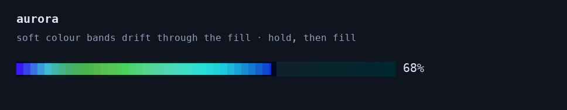
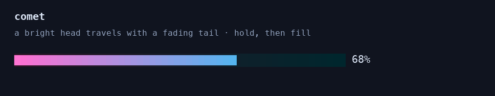
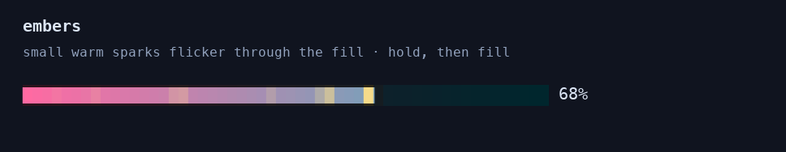
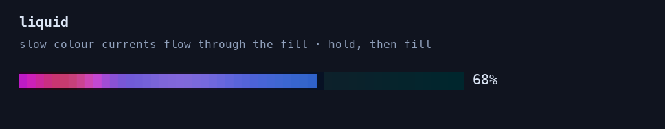
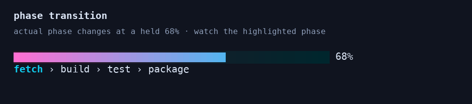

01 / aurora
soft colour bands drift through the fill. compare the movement while progress holds steady.

./progress-bar-3000 --socket-path /tmp/pb3-demo.sock --color-mode truecolor --fps 30 --width 54 --format '%p %{percent}' --style granular --gradient-start '#ff70d2' --gradient-end '#00d8ff' --tint-animation aurora
02 / comet
a bright head travels through the fill with a fading tail behind it.

./progress-bar-3000 --socket-path /tmp/pb3-demo.sock --color-mode truecolor --fps 30 --width 54 --format '%p %{percent}' --style granular --gradient-start '#ff70d2' --gradient-end '#00d8ff' --tint-animation comet
03 / interference
overlapping colour waves move through each other, creating changing bands of light.

./progress-bar-3000 --socket-path /tmp/pb3-demo.sock --color-mode truecolor --fps 30 --width 54 --format '%p %{percent}' --style granular --gradient-start '#ff70d2' --gradient-end '#00d8ff' --tint-animation interference
04 / embers
small warm sparks flicker through the fill, changing locally while progress is held.

./progress-bar-3000 --socket-path /tmp/pb3-demo.sock --color-mode truecolor --fps 30 --width 54 --format '%p %{percent}' --style granular --gradient-start '#ff70d2' --gradient-end '#00d8ff' --tint-animation embers
05 / liquid
slow colour currents flow through the fill with a softer, rolling rhythm.

./progress-bar-3000 --socket-path /tmp/pb3-demo.sock --color-mode truecolor --fps 30 --width 54 --format '%p %{percent}' --style granular --gradient-start '#ff70d2' --gradient-end '#00d8ff' --tint-animation liquid
06 / edge glow
a breathing highlight stays near the leading edge and follows it as the bar fills.

./progress-bar-3000 --socket-path /tmp/pb3-demo.sock --color-mode truecolor --fps 30 --width 54 --format '%p %{percent}' --style granular --gradient-start '#ff70d2' --gradient-end '#00d8ff' --tint-animation edge-glow
07 / milestone ripple
discrete updates cross 25%, 50%, 75%, and 100%, with two seconds between events.

./progress-bar-3000 --socket-path /tmp/pb3-demo.sock --color-mode truecolor --fps 30 --width 54 --format '%p %{percent}' --style granular --gradient-start '#ff70d2' --gradient-end '#00d8ff' --milestone-ripple
08 / phase transition
progress stays at 68% while the phase changes from fetch to build, test, and package.

./progress-bar-3000 --socket-path /tmp/pb3-demo.sock --color-mode truecolor --fps 30 --width 54 --format '%p %{percent}' --style granular --gradient-start '#ff70d2' --gradient-end '#00d8ff' --phase-transition --detail-format '%{phases}'